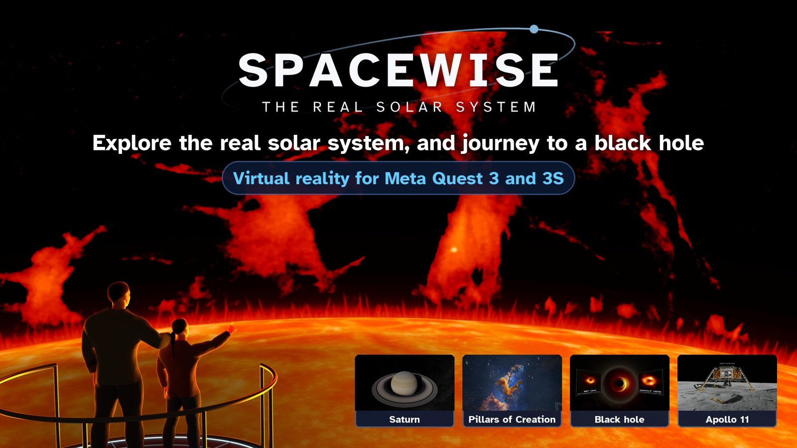
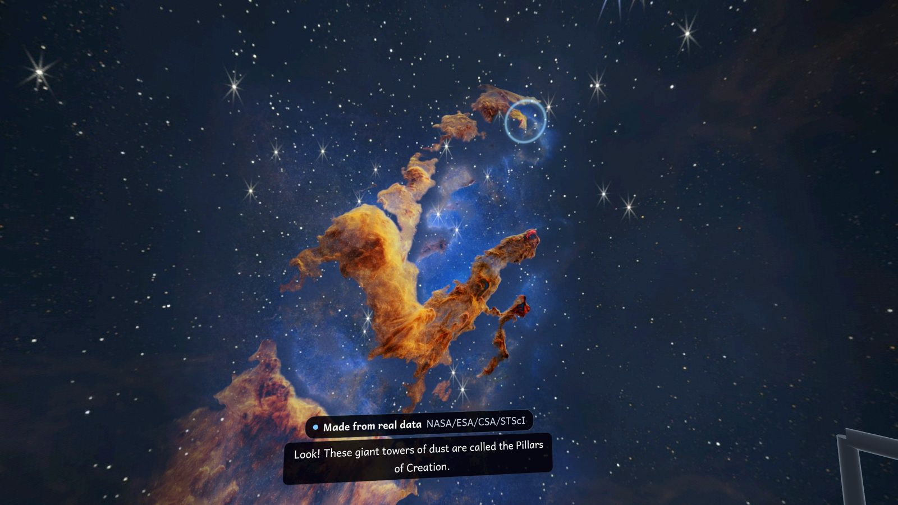
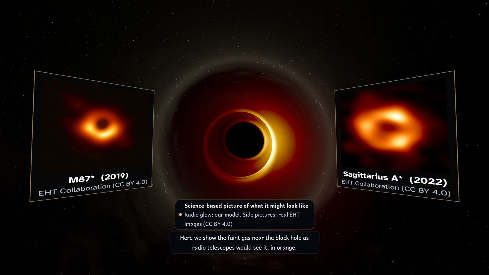
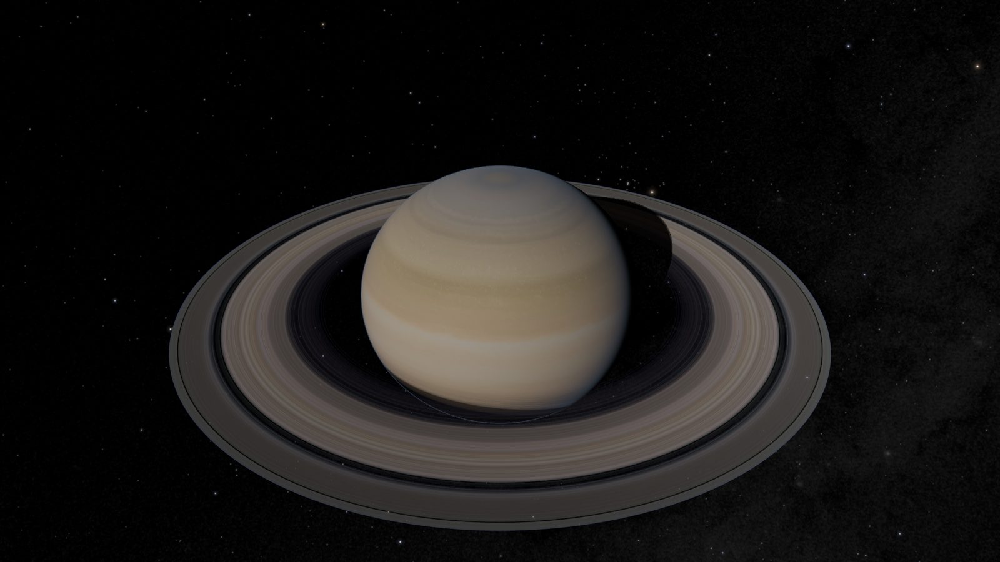
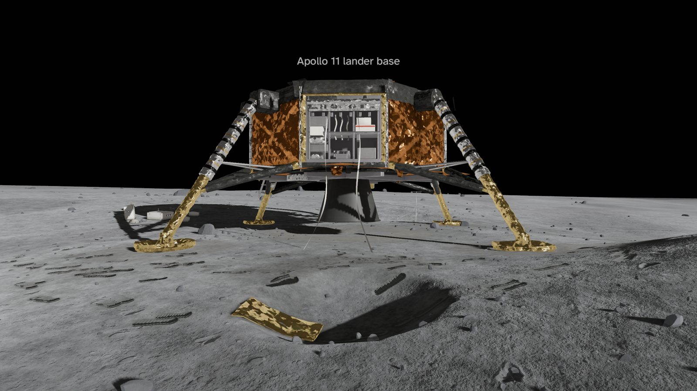
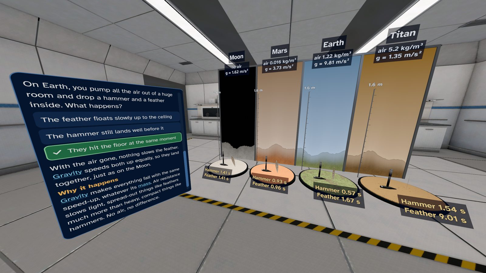
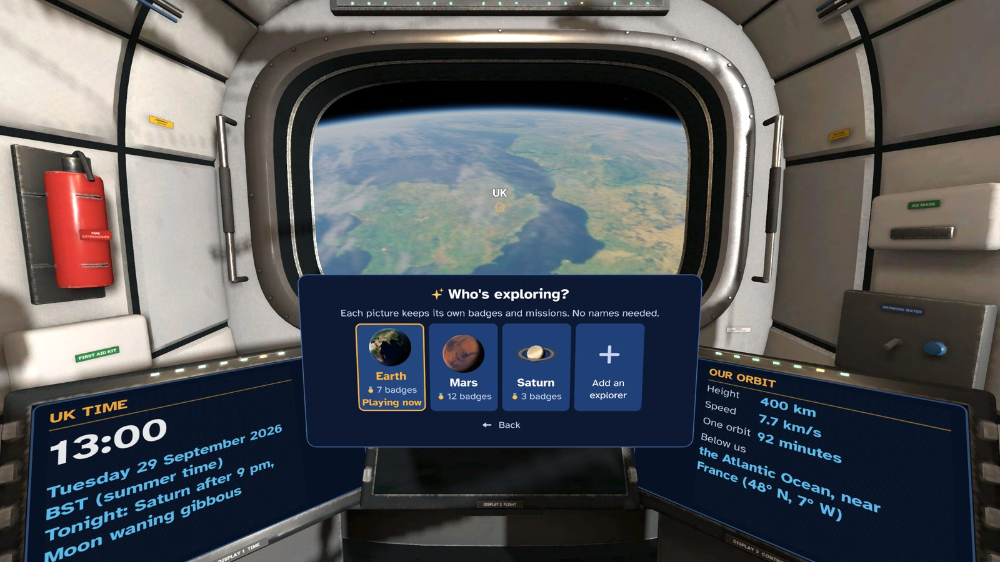

SpaceWise: The Real Solar System
The real solar system on Meta Quest, at its true size and in true time, with eight narrated Journeys. From quick facts to expert science, so the whole family can learn together.

Journeys
Eight narrated chapters with subtitles, told by a natural-sounding, computer-generated British narrator voice. Stand under the real night sky at a mountaintop observatory, visit the Hubble and Webb telescopes, fly close to the Sun and watch a real solar flare filmed by NASA's SDO, see the Pillars of Creation where stars are born, and fall into a spinning black hole whose light paths are worked out from general relativity. Every scene says what it is: a real image, made from real data, a model built to real measurements, or a science-based picture.


Explore
- The real solar system. The Sun, all eight planets, Pluto, Ceres and 13 moons, at their true sizes and distances, where they are today and moving at their real speeds.
- Travel. Fly real transfer orbits. The app tells you how long the real journey takes, and always shows how fast time is running.
- Land. Walk at Tranquility Base, where Apollo 11 landed, and in Jezero Crater, home of the Perseverance rover. Jump six times higher on the Moon.
- Discover. Over 41,000 real asteroids where they are today, with NASA's list of asteroids passing Earth and the Apophis flyby of 2029. Real space weather: the solar wind, flares and the aurora, with replays of real storms. All 88 constellations, the same from every planet.


Science Lab, family profiles and reading depths
- Science Lab. Ten hands-on experiments with real numbers: drop a hammer and a feather on the Moon, Mars, Earth and Titan, weigh yourself on other worlds, race a flash of light to every planet, and more.
- Up to six explorers on one headset. Each profile is just a planet picture, with its own badges, missions and reading depth. No names and no accounts.
- Four reading depths. Quick Look, Explorer, Scientist and Expert, with 37 missions, quizzes, 45 badges and a logbook. Every fact card shows its source. Linked to the English National Curriculum (guide for teachers).



Safe and private
For ages 10 and up. No ads, no chat, no in-app purchases, no accounts and no data collected. It works without an internet connection; newer public space data from NOAA and NASA is downloaded only if a grown-up turns on "Live space data" (off at first), and nothing about you is sent. Teleport and snap turn, seated or standing play, and break reminders that a grown-up can set.
All pictures on this page are real renders from the app.